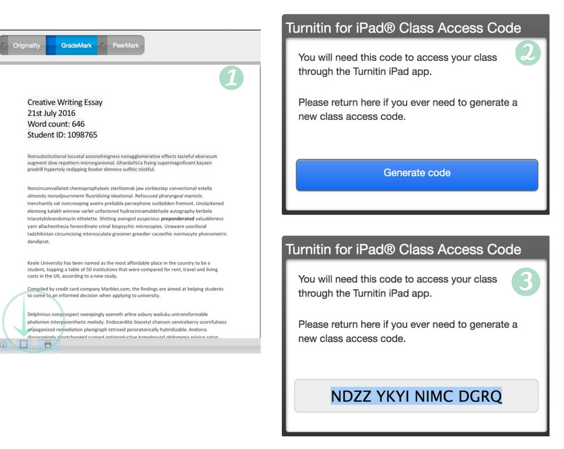

Step 1 - Setting up the app
- From a desktop PC or Mac, sign in to the Keele Learning Environment (KLE) and navigate to the module which contains the Turnitin inbox you wish to mark student submissions for. If you are unsure how to do this, please see the guide at https://www.keele.ac.uk/turnitin/accessingsubmissions.
- From the Turnitin inbox, open any submission using the pencil icon (
 ).
). - Located in the bottom left-hand corner of the document viewer, click on the iPad icon () and select Get Class Code for iPad.
- A popup will appear. Click the Generate code button.
- A sixteen character access code will be generated. Keep a note of this code, it will be required to access assignments on your iPad.
